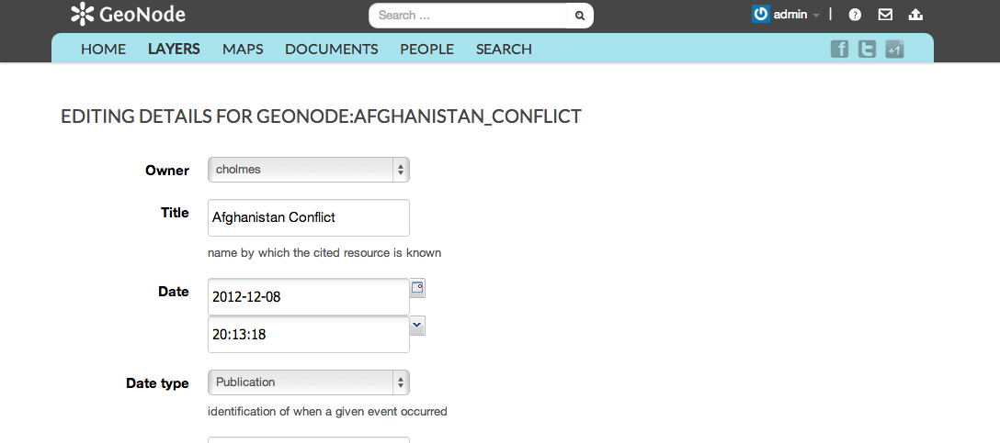
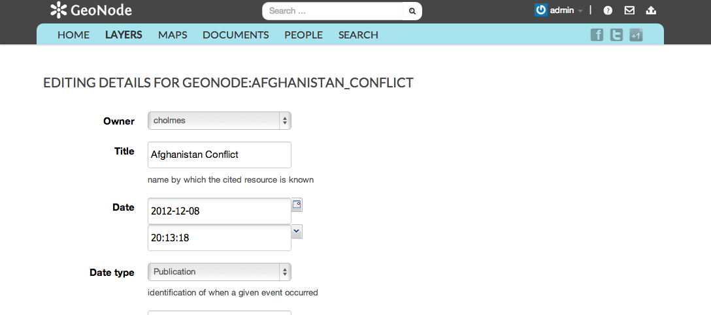

Managing Layers¶
Now that we have uploaded our own layer, lets explore our options for managing that layer.
Visit the Layer Info Page Page.

Select the Edit Permissions Option

Select the Edit Metadata Option

Now that we have uploaded our own layer, lets explore our options for managing that layer.
Visit the Layer Info Page Page.
Select the Edit Permissions Option
Select the Edit Metadata Option
